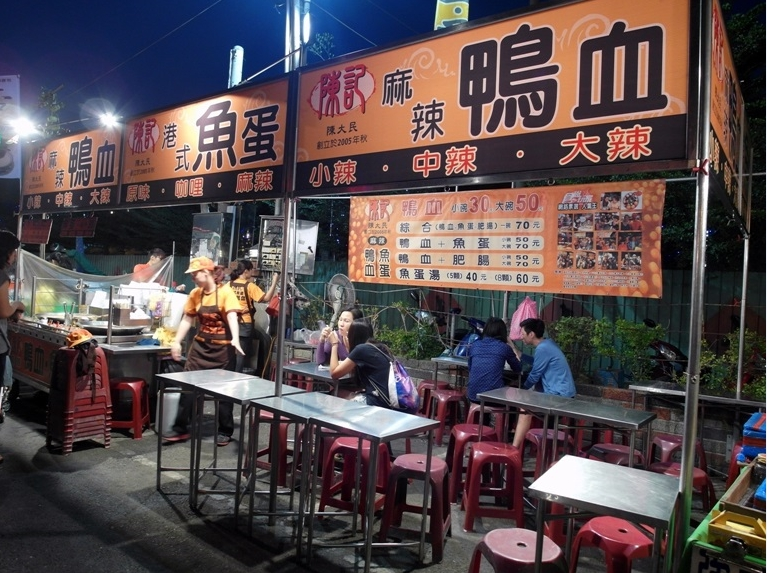
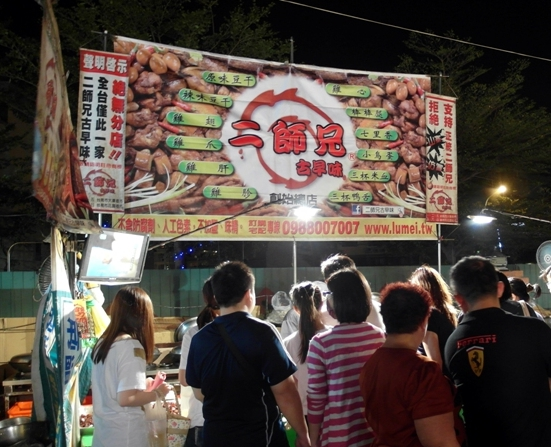

六合夜市
六合夜市位於高雄市，六合夜市距高雄火車站約十幾分鐘路程，沿中山路直行後右轉至六合路即可到達。白天這裡是筆直的大馬路，入夜後車水馬龍熱鬧非凡，各種本地可口美食琳琅滿目，經濟實惠國內外觀光客均慕名而來，知名度頗高，已被列為觀光夜市。
在西元1950年位於現在高雄市新興區大港埔附近的空地上聚集了許多小吃攤，久而久之便形成以小吃聞名的『大港埔夜市』，轉變成為現在的六合夜市；六合夜市全長380公尺共設有170個攤位，大多以小吃、娛樂遊戲為主，其他諸如衣服攤、雜貨攤等並不多見；最特殊的景觀是招牌林立的牛排店，大大小小十多家，主要賣點是平價、家庭式的牛排套餐。此外不論是山產、特產、冷飲、冰品及海產店等也是應有盡有，種類之多令人目不暇給，其中鹽蒸蝦、木瓜牛奶、筒仔米糕、臭豆腐、烏魚腱、海鮮粥、過魚湯、十全藥燉排骨、擔仔麵、土魠魚羹等等算是高雄市的招牌特色，可千萬不要錯過；此外六合夜市裡還有許多擁有異國風味的攤位，像是土耳其人賣的土耳其冰淇淋、墨西哥人賣著墨西哥脆餅，還有日本人、印尼人也來此地擺攤賣飾品等等都十分特別喔！
陳記麻辣鴨血
愛吃鴨血的妳，一定要來上一碗，
鴨血跟魚蛋吃在嘴裡滿滿的扎實感，
辣度適中，不會太辣，
在寒冷的冬天一定要來一碗，
對鴨血很挑我的一吃就愛上，厲害。
統大碳烤雞排

先經由炸後在表面刷上一層獨特的烤醬，
看著雞肉在烤架上滋滋作響，令人食指大動
雞排的皮吃起來有些酥脆，且有炭烤味的口感
二師兄滷味
來到花園夜市，絕對不能做錯的便是這家二師兄滷味，
看圖中滿滿的人群就知道這家店生意多好，
不管在什麼時間，永遠是大排長龍，人龍絡繹不絕，
使用獨家的老滷汁，滷到每一隻皆入味，光用看的便食指大動，
一口咬下，滷汁的芬芳便噴湧而出，令人一口接一口
是作為消夜最好的選擇。